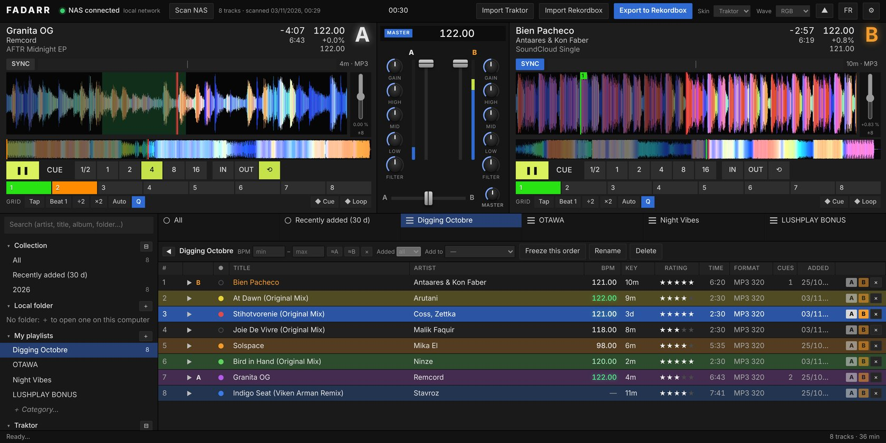
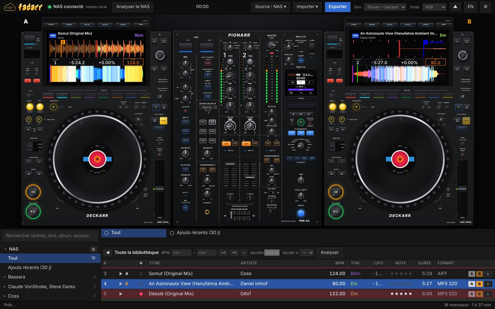
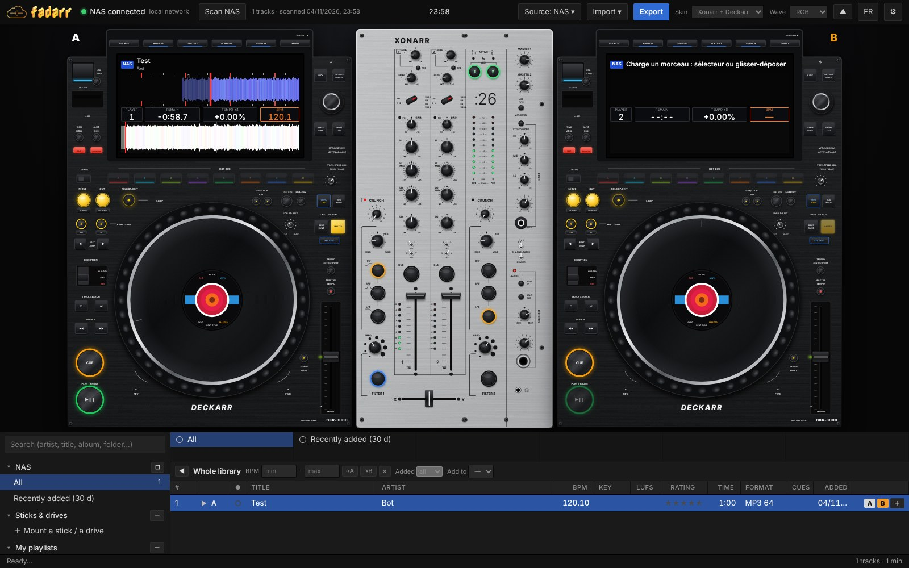
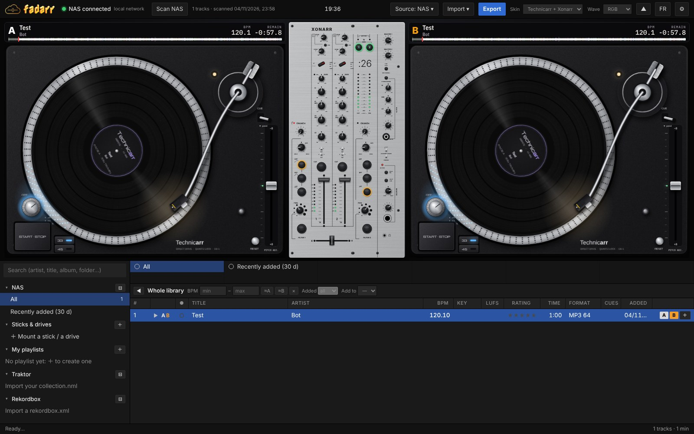

Prep your DJ sets straight from your NAS: import your Traktor or Rekordbox library, set cues and loops on two decks, and export a USB stick your club's CDJs read cleanly.

A small web app that lives next to your music. Use it from any browser on your network, at home or on the road.
Scans your music folder read-only. Folder tree, search, BPM and key filters, ratings and colours. Thousands of tracks scroll smoothly.
Playlists, hot cues, memory cues, loops, beat grids and keys, matched to your files even with accents and typos.
Writes the stick itself: audio, player database, grids, coloured cues and waveforms. Only what changed is rewritten.
Plug in a friend's CDJ stick and jam: its playlists, cues and grids, played straight from the stick. Nothing is written to it.
BPM, beat grid, key, loudness (LUFS) and first sound, with Mixxx's open-source algorithms. Never overwrites a grid you set.
Loudness matching brings analysed tracks to one target level, so you prep with your ears, not the gain knob.
One engine, several faces. Switch look mid-track, the music keeps playing. Every look is drawn from scratch, with no brand logos.



Docker on Unraid, Synology or any Linux box. Your music folder is mounted read-only.
On your network, or anywhere over Tailscale. Optional password.
Back to Rekordbox, or straight to a USB stick for the club.
# get fadarr git clone https://github.com/mauvestudio/fadarr cd fadarr # point it at your music (read-only) echo "FADARR_MUSIC=/mnt/user/music" > .env # start it docker compose up -d # then open http://your-nas:3010
Yes. It's open source under the GPL, and it runs on your own hardware: no account, no subscription.
Never. The music folder is mounted read-only. Everything fadarr knows lives in one file in its data folder.
CDJ-3000, CDJ-2000NXS2 and XDJ players. The stick export is still experimental: test it on a real player before a gig.
No, but fadarr plays well with both: import your library from either, and export back to Rekordbox whenever you want.